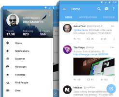

Assignment
Assignment
Module Overview & Background
01: Module Overview
Overview & Tools
Overview & Tools
00: App Design
01: Android Overview
02: Android Anatomy
HelloWorld
Lab-01
UI Design, Navigation & App Structure
UI Design & App Structure
03: UI Design - Part 1
04: UI Design - Part 2
Lab-02
Lab-03
UI Navigation
05: UI Navigation
Lab-04
Data Persistence in Android
Data Persistence using Shared Prefs, SQLite & Realm
06: Android & Shared Preferences
07: Android & SQLite
08: Android & Realm
Lab-05-a
Lab-05-b
Multithreading & Networking
Networking with Volley & Retrofit
09: Android & Volley
10: Android & Retrofit
Lab-06-a
Lab-06-b
Google Services
Google Services, Sign In, Location & Maps
11: Google Sign-in Integration
12: Google Location Services
13: Google Maps
Lab-07
Lab-08
Supplementary Material
Application Structure
Android UX
Recap on JSON
Mobile Application Development
All slides's in Module
Assignment
01: Module Overview
00: App Design
01: Android Overview
02: Android Anatomy
03: UI Design - Part 1
04: UI Design - Part 2
05: UI Navigation

06: Android & Shared Preferences
07: Android & SQLite
08: Android & Realm
09: Android & Volley
10: Android & Retrofit
11: Google Sign-in Integration
12: Google Location Services
13: Google Maps
Application Structure
Android UX
Recap on JSON